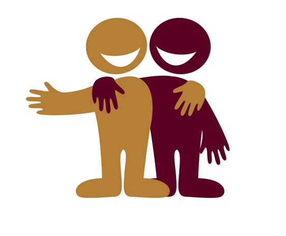

My friends always describe me as nice, welcoming, & openhanded and I couldn't agree more. I always try my best to include others in things because getting involved is always nice. No one wants to be left out/alone and I make sure those who are, aren't. Once I welcome people in and they feel more comfortable, they may describe me as energetic, outgoing, and always talking. When people get comfortable they tend to let loose, and thats when someones true self shows. This is the best time people get to know me and I get to know them. This is always the most fun part which can be seen in the way I act.
|  |
I Like:
- Photography
- 3D Printing/Modelling
- Video Games
- Electronic Circuits